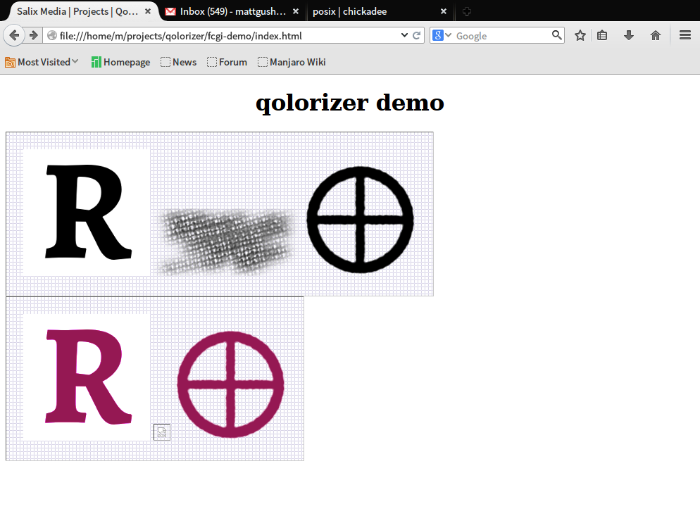
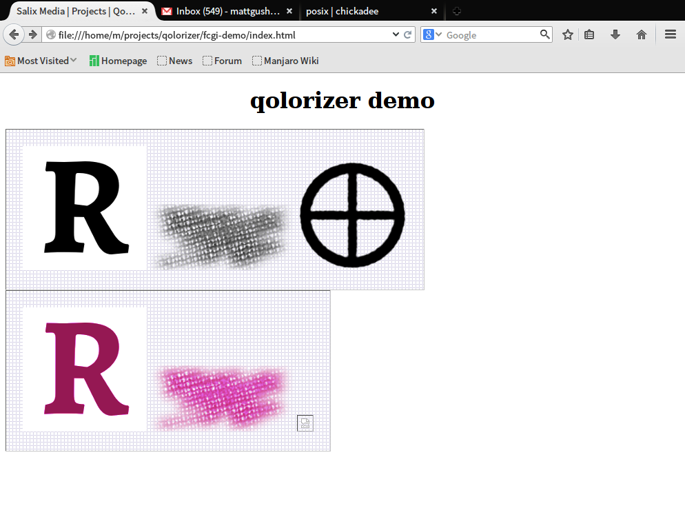

Debugging output
Request 01
nginx access log:
127.0.0.1 - - [21/Oct/2014:15:59:34 -0600] "GET /base/R.png HTTP/1.1" 304 0 "-" "Mozilla/5.0 (X11; Linux x86_64; rv:32.0) Gecko/20100101 Firefox/32.0"
127.0.0.1 - - [21/Oct/2014:15:59:34 -0600] "GET /base/xhatch.png HTTP/1.1" 304 0 "-" "Mozilla/5.0 (X11; Linux x86_64; rv:32.0) Gecko/20100101 Firefox/32.0"
127.0.0.1 - - [21/Oct/2014:15:59:34 -0600] "GET /base/earthsym.png HTTP/1.1" 304 0 "-" "Mozilla/5.0 (X11; Linux x86_64; rv:32.0) Gecko/20100101 Firefox/32.0"
127.0.0.1 - - [21/Oct/2014:15:59:34 -0600] "GET /dodge/cc2172/0.73/xhatch.png HTTP/1.1" 502 172 "-" "Mozilla/5.0 (X11; Linux x86_64; rv:32.0) Gecko/20100101 Firefox/32.0"
127.0.0.1 - - [21/Oct/2014:15:59:34 -0600] "GET /dodge/cc2172/0.73/earthsym.png HTTP/1.1" 200 14053 "-" "Mozilla/5.0 (X11; Linux x86_64; rv:32.0) Gecko/20100101 Firefox/32.0"
127.0.0.1 - - [21/Oct/2014:15:59:34 -0600] "GET /dodge/cc2172/0.73/R.png HTTP/1.1" 200 4987 "-" "Mozilla/5.0 (X11; Linux x86_64; rv:32.0) Gecko/20100101 Firefox/32.0"
qolorizer debug log:
[qolorizer.fcgi :: Tue Oct 21 15:59:34 2014] Generated '/tmp/temp28cc.3237.png' for request 'dodge/cc2172/0.73/earthsym.png'
[qolorizer.fcgi :: Tue Oct 21 15:59:34 2014] Generated '/tmp/tempa1b.3237.png' for request 'dodge/cc2172/0.73/R.png'
result:

Request 02
nginx access log:
127.0.0.1 - - [21/Oct/2014:16:00:21 -0600] "GET /base/R.png HTTP/1.1" 304 0 "-" "Mozilla/5.0 (X11; Linux x86_64; rv:32.0) Gecko/20100101 Firefox/32.0"
127.0.0.1 - - [21/Oct/2014:16:00:21 -0600] "GET /base/xhatch.png HTTP/1.1" 304 0 "-" "Mozilla/5.0 (X11; Linux x86_64; rv:32.0) Gecko/20100101 Firefox/32.0"
127.0.0.1 - - [21/Oct/2014:16:00:21 -0600] "GET /base/earthsym.png HTTP/1.1" 304 0 "-" "Mozilla/5.0 (X11; Linux x86_64; rv:32.0) Gecko/20100101 Firefox/32.0"
127.0.0.1 - - [21/Oct/2014:16:00:21 -0600] "GET /dodge/cc2172/0.73/earthsym.png HTTP/1.1" 502 172 "-" "Mozilla/5.0 (X11; Linux x86_64; rv:32.0) Gecko/20100101 Firefox/32.0"
127.0.0.1 - - [21/Oct/2014:16:00:21 -0600] "GET /dodge/cc2172/0.73/xhatch.png HTTP/1.1" 200 52046 "-" "Mozilla/5.0 (X11; Linux x86_64; rv:32.0) Gecko/20100101 Firefox/32.0"
127.0.0.1 - - [21/Oct/2014:16:00:21 -0600] "GET /dodge/cc2172/0.73/R.png HTTP/1.1" 200 4987 "-" "Mozilla/5.0 (X11; Linux x86_64; rv:32.0) Gecko/20100101 Firefox/32.0"
qolorizer debug log:
[qolorizer.fcgi :: Tue Oct 21 16:00:21 2014] Generated '/tmp/tempebb4.3237.png' for request 'dodge/cc2172/0.73/xhatch.png'
[qolorizer.fcgi :: Tue Oct 21 16:00:21 2014] Generated '/tmp/temp134e.3237.png' for request 'dodge/cc2172/0.73/R.png'
result:

Request 03
nginx access log:
127.0.0.1 - - [21/Oct/2014:16:01:04 -0600] "GET /dodge/cc2172/0.73/xhatch.png HTTP/1.1" 502 172 "-" "Mozilla/5.0 (X11; Linux x86_64; rv:32.0) Gecko/20100101 Firefox/32.0"
127.0.0.1 - - [21/Oct/2014:16:01:04 -0600] "GET /dodge/cc2172/0.73/earthsym.png HTTP/1.1" 200 14053 "-" "Mozilla/5.0 (X11; Linux x86_64; rv:32.0) Gecko/20100101 Firefox/32.0"
127.0.0.1 - - [21/Oct/2014:16:01:04 -0600] "GET /dodge/cc2172/0.73/R.png HTTP/1.1" 200 4987 "-" "Mozilla/5.0 (X11; Linux x86_64; rv:32.0) Gecko/20100101 Firefox/32.0"
qolorizer debug log:
[qolorizer.fcgi :: Tue Oct 21 16:01:04 2014] Generated '/tmp/tempd4.3237.png' for request 'dodge/cc2172/0.73/earthsym.png'
[qolorizer.fcgi :: Tue Oct 21 16:01:04 2014] Generated '/tmp/temp103a.3237.png' for request 'dodge/cc2172/0.73/R.png'
result:
Request 04
nginx access log:
127.0.0.1 - - [21/Oct/2014:16:01:52 -0600] "GET /base/R.png HTTP/1.1" 304 0 "-" "Mozilla/5.0 (X11; Linux x86_64; rv:32.0) Gecko/20100101 Firefox/32.0"
127.0.0.1 - - [21/Oct/2014:16:01:52 -0600] "GET /base/xhatch.png HTTP/1.1" 304 0 "-" "Mozilla/5.0 (X11; Linux x86_64; rv:32.0) Gecko/20100101 Firefox/32.0"
127.0.0.1 - - [21/Oct/2014:16:01:52 -0600] "GET /base/earthsym.png HTTP/1.1" 304 0 "-" "Mozilla/5.0 (X11; Linux x86_64; rv:32.0) Gecko/20100101 Firefox/32.0"
127.0.0.1 - - [21/Oct/2014:16:01:52 -0600] "GET /dodge/cc2172/0.73/earthsym.png HTTP/1.1" 502 172 "-" "Mozilla/5.0 (X11; Linux x86_64; rv:32.0) Gecko/20100101 Firefox/32.0"
127.0.0.1 - - [21/Oct/2014:16:01:52 -0600] "GET /dodge/cc2172/0.73/xhatch.png HTTP/1.1" 200 52046 "-" "Mozilla/5.0 (X11; Linux x86_64; rv:32.0) Gecko/20100101 Firefox/32.0"
127.0.0.1 - - [21/Oct/2014:16:01:52 -0600] "GET /dodge/cc2172/0.73/R.png HTTP/1.1" 200 4987 "-" "Mozilla/5.0 (X11; Linux x86_64; rv:32.0) Gecko/20100101 Firefox/32.0"
qolorizer debug log:
[qolorizer.fcgi :: Tue Oct 21 16:01:52 2014] Generated '/tmp/temp9c38.3237.png' for request 'dodge/cc2172/0.73/xhatch.png'
[qolorizer.fcgi :: Tue Oct 21 16:01:52 2014] Generated '/tmp/temp19df.3237.png' for request 'dodge/cc2172/0.73/R.png'
result:

Request 05
nginx access log:
127.0.0.1 - - [21/Oct/2014:16:02:40 -0600] "GET /base/R.png HTTP/1.1" 304 0 "-" "Mozilla/5.0 (X11; Linux x86_64; rv:32.0) Gecko/20100101 Firefox/32.0"
127.0.0.1 - - [21/Oct/2014:16:02:40 -0600] "GET /base/xhatch.png HTTP/1.1" 304 0 "-" "Mozilla/5.0 (X11; Linux x86_64; rv:32.0) Gecko/20100101 Firefox/32.0"
127.0.0.1 - - [21/Oct/2014:16:02:40 -0600] "GET /base/earthsym.png HTTP/1.1" 304 0 "-" "Mozilla/5.0 (X11; Linux x86_64; rv:32.0) Gecko/20100101 Firefox/32.0"
127.0.0.1 - - [21/Oct/2014:16:02:40 -0600] "GET /dodge/cc2172/0.73/xhatch.png HTTP/1.1" 502 172 "-" "Mozilla/5.0 (X11; Linux x86_64; rv:32.0) Gecko/20100101 Firefox/32.0"
127.0.0.1 - - [21/Oct/2014:16:02:40 -0600] "GET /dodge/cc2172/0.73/earthsym.png HTTP/1.1" 200 14053 "-" "Mozilla/5.0 (X11; Linux x86_64; rv:32.0) Gecko/20100101 Firefox/32.0"
127.0.0.1 - - [21/Oct/2014:16:02:40 -0600] "GET /dodge/cc2172/0.73/R.png HTTP/1.1" 200 4987 "-" "Mozilla/5.0 (X11; Linux x86_64; rv:32.0) Gecko/20100101 Firefox/32.0"
qolorizer debug log:
[qolorizer.fcgi :: Tue Oct 21 16:02:40 2014] Generated '/tmp/temp8b6b.3237.png' for request 'dodge/cc2172/0.73/earthsym.png'
[qolorizer.fcgi :: Tue Oct 21 16:02:40 2014] Generated '/tmp/temp1185.3237.png' for request 'dodge/cc2172/0.73/R.png'
result:
Request 06
nginx access log:
127.0.0.1 - - [21/Oct/2014:16:03:30 -0600] "GET /dodge/cc2172/0.73/earthsym.png HTTP/1.1" 502 172 "-" "Mozilla/5.0 (X11; Linux x86_64; rv:32.0) Gecko/20100101 Firefox/32.0"
127.0.0.1 - - [21/Oct/2014:16:03:30 -0600] "GET /dodge/cc2172/0.73/xhatch.png HTTP/1.1" 200 52046 "-" "Mozilla/5.0 (X11; Linux x86_64; rv:32.0) Gecko/20100101 Firefox/32.0"
127.0.0.1 - - [21/Oct/2014:16:03:30 -0600] "GET /dodge/cc2172/0.73/R.png HTTP/1.1" 200 4987 "-" "Mozilla/5.0 (X11; Linux x86_64; rv:32.0) Gecko/20100101 Firefox/32.0"
qolorizer debug log:
[qolorizer.fcgi :: Tue Oct 21 16:03:30 2014] Generated '/tmp/temp3f41.3237.png' for request 'dodge/cc2172/0.73/xhatch.png'
[qolorizer.fcgi :: Tue Oct 21 16:03:30 2014] Generated '/tmp/temp930b.3237.png' for request 'dodge/cc2172/0.73/R.png'
result:
Request 07
nginx access log:
127.0.0.1 - - [21/Oct/2014:16:04:17 -0600] "GET /base/R.png HTTP/1.1" 304 0 "-" "Mozilla/5.0 (X11; Linux x86_64; rv:32.0) Gecko/20100101 Firefox/32.0"
127.0.0.1 - - [21/Oct/2014:16:04:17 -0600] "GET /base/xhatch.png HTTP/1.1" 304 0 "-" "Mozilla/5.0 (X11; Linux x86_64; rv:32.0) Gecko/20100101 Firefox/32.0"
127.0.0.1 - - [21/Oct/2014:16:04:17 -0600] "GET /base/earthsym.png HTTP/1.1" 304 0 "-" "Mozilla/5.0 (X11; Linux x86_64; rv:32.0) Gecko/20100101 Firefox/32.0"
127.0.0.1 - - [21/Oct/2014:16:04:17 -0600] "GET /dodge/cc2172/0.73/xhatch.png HTTP/1.1" 502 172 "-" "Mozilla/5.0 (X11; Linux x86_64; rv:32.0) Gecko/20100101 Firefox/32.0"
127.0.0.1 - - [21/Oct/2014:16:04:17 -0600] "GET /dodge/cc2172/0.73/earthsym.png HTTP/1.1" 200 14053 "-" "Mozilla/5.0 (X11; Linux x86_64; rv:32.0) Gecko/20100101 Firefox/32.0"
127.0.0.1 - - [21/Oct/2014:16:04:17 -0600] "GET /dodge/cc2172/0.73/R.png HTTP/1.1" 200 4987 "-" "Mozilla/5.0 (X11; Linux x86_64; rv:32.0) Gecko/20100101 Firefox/32.0"
qolorizer debug log:
[qolorizer.fcgi :: Tue Oct 21 16:04:17 2014] Generated '/tmp/tempd0e1.3237.png' for request 'dodge/cc2172/0.73/earthsym.png'
[qolorizer.fcgi :: Tue Oct 21 16:04:17 2014] Generated '/tmp/temp8e2e.3237.png' for request 'dodge/cc2172/0.73/R.png'
result:
Request 08
nginx access log:
127.0.0.1 - - [21/Oct/2014:16:05:11 -0600] "GET /dodge/cc2172/0.73/earthsym.png HTTP/1.1" 502 172 "-" "Mozilla/5.0 (X11; Linux x86_64; rv:32.0) Gecko/20100101 Firefox/32.0"
127.0.0.1 - - [21/Oct/2014:16:05:11 -0600] "GET /dodge/cc2172/0.73/xhatch.png HTTP/1.1" 200 52046 "-" "Mozilla/5.0 (X11; Linux x86_64; rv:32.0) Gecko/20100101 Firefox/32.0"
127.0.0.1 - - [21/Oct/2014:16:05:11 -0600] "GET /dodge/cc2172/0.73/R.png HTTP/1.1" 200 4987 "-" "Mozilla/5.0 (X11; Linux x86_64; rv:32.0) Gecko/20100101 Firefox/32.0"
qolorizer debug log:
[qolorizer.fcgi :: Tue Oct 21 16:05:11 2014] Generated '/tmp/temp8b95.3237.png' for request 'dodge/cc2172/0.73/xhatch.png'
[qolorizer.fcgi :: Tue Oct 21 16:05:11 2014] Generated '/tmp/temp518e.3237.png' for request 'dodge/cc2172/0.73/R.png'
result:
Request 09
nginx access log:
127.0.0.1 - - [21/Oct/2014:16:05:59 -0600] "GET /base/R.png HTTP/1.1" 304 0 "-" "Mozilla/5.0 (X11; Linux x86_64; rv:32.0) Gecko/20100101 Firefox/32.0"
127.0.0.1 - - [21/Oct/2014:16:05:59 -0600] "GET /base/xhatch.png HTTP/1.1" 304 0 "-" "Mozilla/5.0 (X11; Linux x86_64; rv:32.0) Gecko/20100101 Firefox/32.0"
127.0.0.1 - - [21/Oct/2014:16:05:59 -0600] "GET /base/earthsym.png HTTP/1.1" 304 0 "-" "Mozilla/5.0 (X11; Linux x86_64; rv:32.0) Gecko/20100101 Firefox/32.0"
127.0.0.1 - - [21/Oct/2014:16:05:59 -0600] "GET /dodge/cc2172/0.73/xhatch.png HTTP/1.1" 502 172 "-" "Mozilla/5.0 (X11; Linux x86_64; rv:32.0) Gecko/20100101 Firefox/32.0"
127.0.0.1 - - [21/Oct/2014:16:05:59 -0600] "GET /dodge/cc2172/0.73/earthsym.png HTTP/1.1" 200 14053 "-" "Mozilla/5.0 (X11; Linux x86_64; rv:32.0) Gecko/20100101 Firefox/32.0"
127.0.0.1 - - [21/Oct/2014:16:05:59 -0600] "GET /dodge/cc2172/0.73/R.png HTTP/1.1" 200 4987 "-" "Mozilla/5.0 (X11; Linux x86_64; rv:32.0) Gecko/20100101 Firefox/32.0"
qolorizer debug log:
[qolorizer.fcgi :: Tue Oct 21 16:05:59 2014] Generated '/tmp/temp1c8.3237.png' for request 'dodge/cc2172/0.73/earthsym.png'
[qolorizer.fcgi :: Tue Oct 21 16:05:59 2014] Generated '/tmp/temp10ef.3237.png' for request 'dodge/cc2172/0.73/R.png'
result:
Request 10
nginx access log:
127.0.0.1 - - [21/Oct/2014:16:07:01 -0600] "GET /dodge/cc2172/0.73/earthsym.png HTTP/1.1" 502 172 "-" "Mozilla/5.0 (X11; Linux x86_64; rv:32.0) Gecko/20100101 Firefox/32.0"
127.0.0.1 - - [21/Oct/2014:16:07:01 -0600] "GET /dodge/cc2172/0.73/xhatch.png HTTP/1.1" 200 52046 "-" "Mozilla/5.0 (X11; Linux x86_64; rv:32.0) Gecko/20100101 Firefox/32.0"
127.0.0.1 - - [21/Oct/2014:16:07:01 -0600] "GET /dodge/cc2172/0.73/R.png HTTP/1.1" 200 4987 "-" "Mozilla/5.0 (X11; Linux x86_64; rv:32.0) Gecko/20100101 Firefox/32.0"
qolorizer debug log:
[qolorizer.fcgi :: Tue Oct 21 16:07:01 2014] Generated '/tmp/temp3093.3237.png' for request 'dodge/cc2172/0.73/xhatch.png'
[qolorizer.fcgi :: Tue Oct 21 16:07:01 2014] Generated '/tmp/temp1fe4.3237.png' for request 'dodge/cc2172/0.73/R.png'
result: